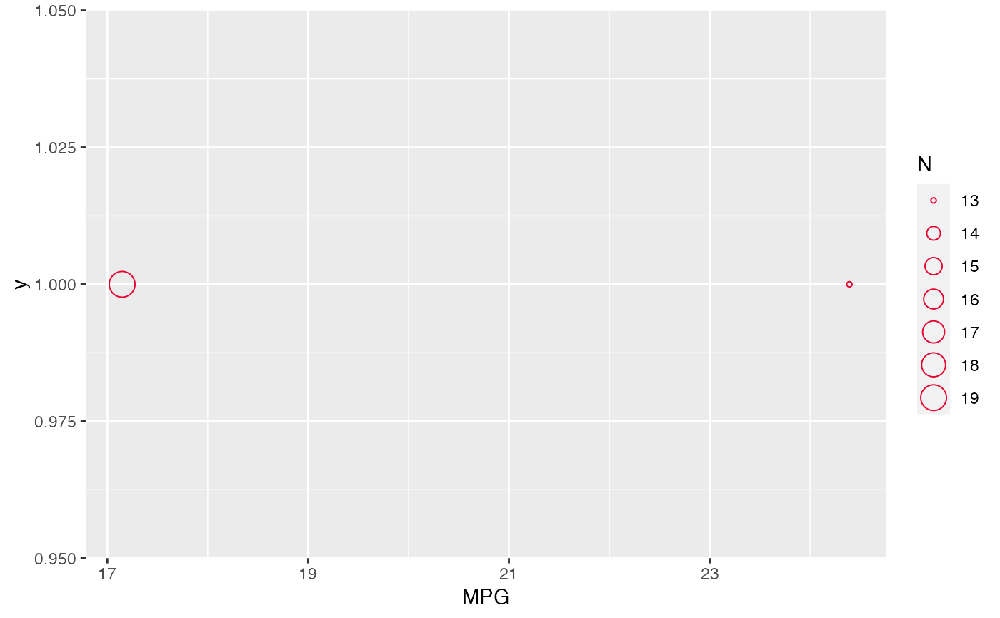
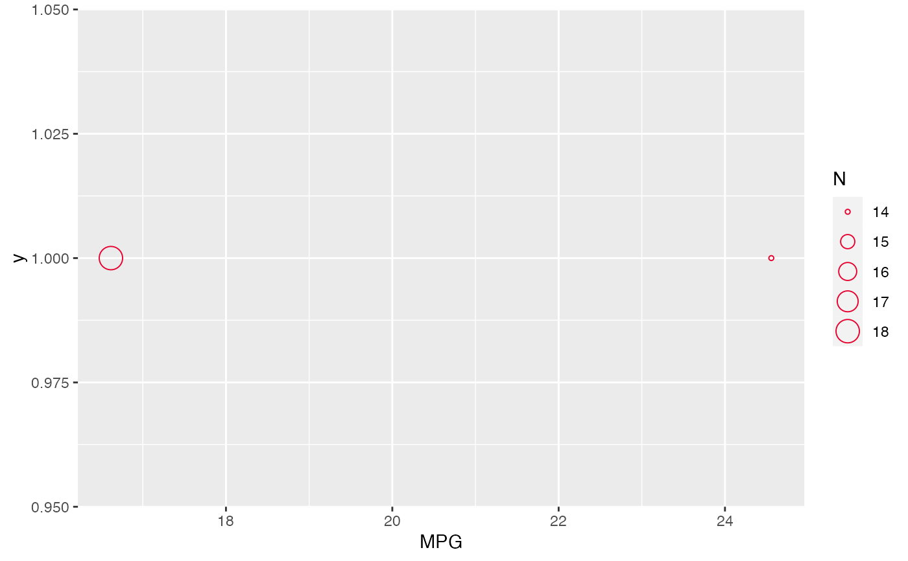
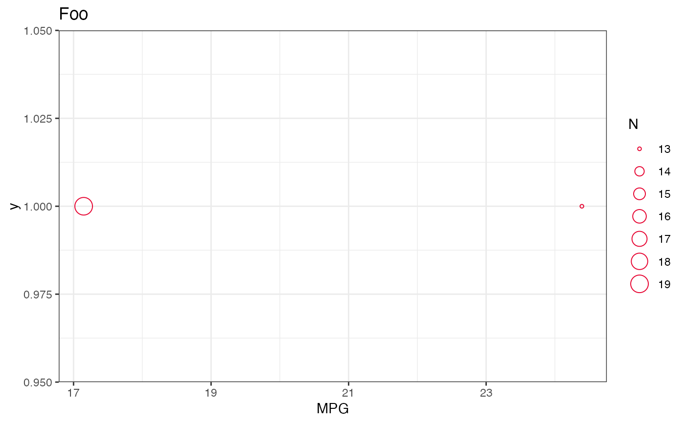

plot.kpi.Rd
Plot KPI objects
# S3 method for kpi plot(x, y = 1, col = "#E6002EFF", pch = 21, ...)
result from kpi
ignored
colour for points
point character
for possible future expansion
list of ggplot objects
# defaults kpi <- mtcars %>% kpi("mpg", by = c("am", "vs"), txt = "MPG") plot(kpi) #> $am  #> #> $vs  #> # customizing the plots plots <- plot(kpi) plots$am + theme_bw() + labs(title = "Foo") 